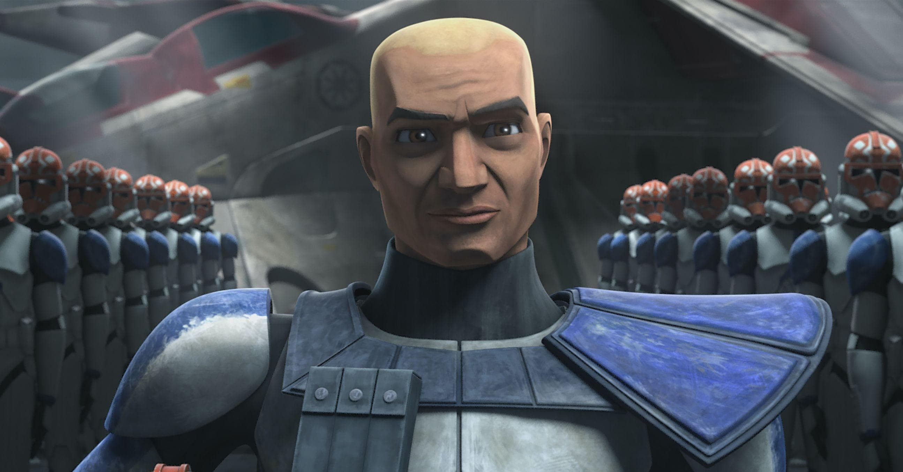

About Captain Rex
CT-7567 (commonly known as Captain Rex) is a clone commanding officer that was a part of the 501st Legion that served under Master Anakin Skywalker.
Rex surrounded by troops of the 501st
More about Captain Rex
- He fought in the Battle of Endor
- Is the only surviving member of his Unit
- Had his inhibitor chip removed to not be controlled by the Galactic Empire
Captain Rex's Close Allies
During his service for the Galactic Republic Rex worked with some amazing people. Click the links below to read more about them: